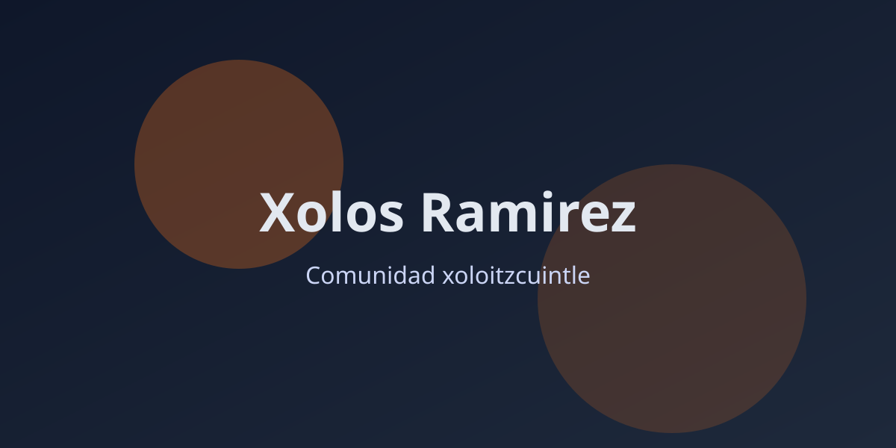

El Xoloitzcuintle: De la Zootecnia Imperial de Moctezuma a Símbolo de Identidad Nacional
Por: Redacción Xolos Ramírez En la reciente emisión de nuestro programa "Café con Xolos Ramírez" , nos sumergimos en las profundidades de la historia prehispán…

Por: Redacción Xolos Ramírez
En la reciente emisión de nuestro programa "Café con Xolos Ramírez" , nos sumergimos en las profundidades de la historia prehispánica para entender por qué el Xoloitzcuintle no es simplemente una mascota, sino un legado vivo de la cosmogonía azteca. Acompañados por el carismático Tane Ramírez , un ejemplar miniatura de color negro profundo, exploramos el vínculo sagrado entre esta raza y los antiguos gobernantes de México.
Un Habitante del Palacio: El Zoológico de Moctezuma II
Contrario a la creencia popular de que el Xoloitzcuintle era un animal de consumo común, las crónicas españolas y la evidencia histórica nos revelan una realidad mucho más sofisticada. Fernando, director de Xolos Ramírez , destacó durante el programa que el emperador Moctezuma II era un apasionado de la zootecnia.
En su palacio de la Gran Tenochtitlán, Moctezuma mantenía una colección impresionante de fauna mesoamericana. Entre jaguares y quetzales, el Xoloitzcuintle ocupaba un lugar de honor. Se dice que el emperador poseía más de cien ejemplares, cada uno con un cuidador dedicado que no solo se encargaba de su alimentación, sino que los protegía del frío nocturno con mantas, tratándolos con el respeto que merecía una divinidad encarnada.
Élite y Espiritualidad: El Guía al Mictlán
El estatus del Xoloitzcuintle estaba intrínsecamente ligado a la religión. Para la nobleza y el clero mexica, estos perros poseían el Tonalli (energía vital) del dios Xólotl , el gemelo de Quetzalcóatl y representante del sol en el inframundo.
Esta conexión divina los convertía en los únicos seres capaces de guiar las almas a través del río Chiconahuapan para alcanzar el descanso eterno en el Mictlán . Poseer un Xoloitzcuintle no era solo una muestra de riqueza, sino una preparación espiritual para la vida después de la muerte.
¿Xoloitzcuintle o Tlalchichi? Desmitificando el Mercado de Acolman
Uno de los puntos más reveladores del reportaje fue la aclaración sobre el consumo de carne de perro en el México antiguo. Fernando explicó que en mercados como el de Acolman , el perro que se comercializaba era principalmente el Tlalchichi , un ancestro del actual Chihuahua de patas cortas y cuerpo robusto criado específicamente para el consumo. El Xoloitzcuintle auténtico, debido a su carácter sagrado, se reservaba exclusivamente para rituales de alta jerarquía y solo podía ser consumido por la casta sacerdotal en ocasiones especiales para conectar con lo divino.
El Renacimiento de una Leyenda
Hoy, el Xoloitzcuintle ha dejado los palacios imperiales para convertirse en el Patrimonio Cultural de la Ciudad de México . Desde el impulso que le dieron artistas como Frida Kahlo y Diego Rivera, hasta su actual estatus como ícono de la comunidad intelectual y artística, el Xolo sigue representando la resistencia y la belleza de nuestras raíces.
En Xolos Ramírez , nos enorgullece continuar con esta tradición milenaria, criando ejemplares que conservan la esencia, la salud y la elegancia que fascinaron a los grandes Tlatoanis hace más de 500 años.
¿Quieres conocer más sobre el Xoloitzcuintle?
Te invitamos a ver el episodio completo de nuestro programa en YouTube:
📺 Moctezuma y el Xoloitzcuintle | Café con Xolos Ramírez
Enlaces de interés:
-
🐾 Cachorros Disponibles: Explora nuestra selección de ejemplares
-
🌿 Cuidado Especializado: Productos para la piel de tu Xolo